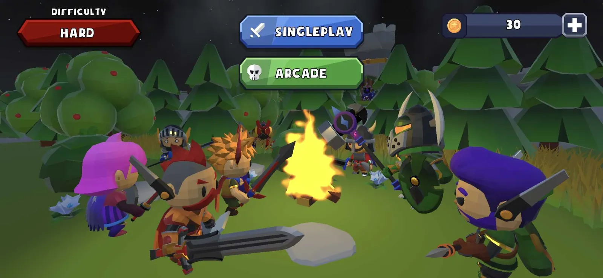

Heroes of Alatyr
Matematika kao najoštriji mač.

Moja lična igra, koja uskoro izlazi. Edukativna akciona avantura u low-poly fantasy svijetu: kad naiđeš na protivnika, borbu dobijaš tako što rješenje matematičkog zadatka nacrtaš na ekranu, dok sat otkucava. Nacrtane brojeve prepoznaje AI alat koji sam razvio tokom studija na Univerzitetu Mediteran.
Solo · razvoj i dizajnMoja igra · uskoro izlazi
Ključne mogućnosti
- Odgovore crtaš na ekranu, AI prepoznaje nacrtane brojeve
- Sopstveni model za prepoznavanje cifara, razvijen tokom studija
- Borbe kroz matematičke zadatke na vrijeme
- 9 heroja koji se otključavaju novčićima
- Nivoi težine i dva moda igre: Singleplay i Arcade